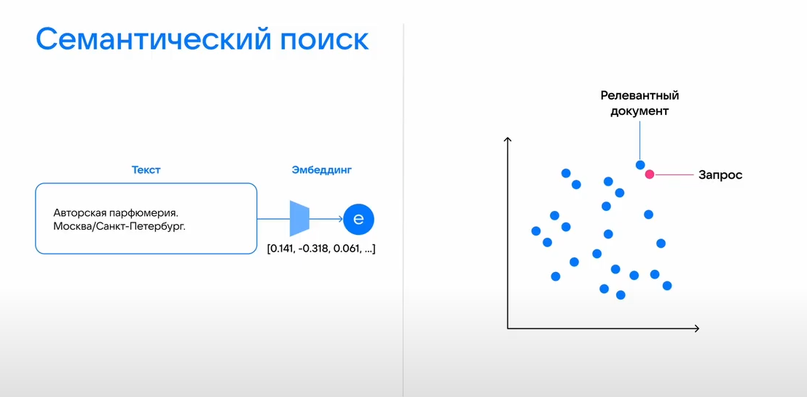

1. Роль поиска в RAG-системе
RAG-система состоит из двух основных компонентов: поиска (retrieval) и генерации (generation). Эти компоненты работают последовательно, и каждый из них критически важен для успешной работы системы в целом. Поиск отвечает за то, чтобы найти в базе знаний фрагменты, релевантные вопросу пользователя. Генерация — за то, чтобы на основе этих фрагментов сформулировать связный, точный и полезный ответ.
Без качественного поиска RAG-система бесполезна. Если поиск вернёт нерелевантные фрагменты, языковая модель получит «мусор» на вход и сгенерирует неверный ответ, каким бы мощным ни был сам генератор. Если поиск вернёт слишком мало фрагментов, модели может не хватить информации для ответа. Если слишком много — модель может запутаться в избыточных данных или превысить ограничение по длине контекста.
Семантический поиск — это тот тип поиска, который наиболее часто используется в современных RAG-системах. В отличие от лексического (традиционного) поиска по ключевым словам, семантический поиск ищет по смыслу, что критически важно для работы с естественно-языковыми запросами, которые формулируют пользователи.
2. Почему в RAG нужен именно семантический поиск
Пользователь RAG-системы задаёт вопрос на естественном языке. Он не вводит специальные ключевые слова, не строит сложные поисковые запросы — он просто спрашивает так, как привык общаться с другим человеком. Это естественное поведение, и хорошая RAG-система должна его поддерживать.
Пример: пользователь спрашивает «Как поменять пароль в личном кабинете?» Лексический (ключевой) поиск будет искать документы, где есть слова «как», «поменять», «пароль», «личном», «кабинете». Если в документах используется фраза «смена учётных данных» или «обновление аутентификации», лексический поиск их не найдёт, потому что там нет точных совпадений по словам. Семантический поиск, в отличие от лексического, «поймёт», что «поменять пароль» и «смена учётных данных» — это одно и то же по смыслу, и успешно найдёт релевантный документ.
Почему это критично именно для RAG? База знаний RAG-системы может содержать ответ, сформулированный совершенно иными словами, чем спросил пользователь. В корпоративной документации принят один стиль, а пользователь задаёт вопрос в другом. Семантический поиск позволяет этот ответ найти, а лексический — нет. Кроме того, в RAG-системе важно, чтобы найденные фрагменты были разнообразными по формулировкам — это даёт языковой модели более полную картину. Семантический поиск с этой задачей справляется лучше, так как он группирует фрагменты по смыслу, а не по общим словам.

3. Как устроен семантический поиск
Семантический поиск в RAG-системе опирается на фундаментальное свойство эмбеддингов, о котором мы говорили в лекции 3: семантически близкие тексты оказываются близкими в векторном пространстве. На этом принципе строится весь процесс поиска.
Процесс семантического поиска делится на два этапа:
Этап 1 — Подготовка базы знаний (выполняется один раз):
- Все документы разбиваются на небольшие фрагменты (чанки) — обычно 100-500 слов
- Каждый фрагмент преобразуется в эмбеддинг с помощью модели-энкодера
- Эмбеддинги сохраняются в векторной базе данных вместе с исходными текстами и метаданными
Этап 2 — Поиск по запросу пользователя (выполняется каждый раз):
- Вопрос пользователя преобразуется в эмбеддинг той же моделью-энкодером
- Векторная база данных находит фрагменты с наиболее близкими эмбеддингами
- Близость измеряется метрикой сходства (чаще всего косинусной)
- Найденные фрагменты (обычно 3-10) передаются языковой модели как контекст
Важно понимать, что семантический поиск не гарантирует, что релевантный фрагмент будет на первом месте — он просто находит набор близких по смыслу фрагментов. Поэтому на практике используют не один, а несколько верхних результатов, чтобы подстраховаться.
4. Преимущества семантического поиска для RAG
- Понимание синонимов и разной терминологии. Пользователь может спросить «как оплатить заказ», а в документах написано «совершение платежа». Семантический поиск поймёт, что это одно и то же, и найдёт нужный документ.
- Понимание обобщений и гипонимов. Пользователь может спросить «как лечить простуду», а в медицинской документации описывается лечение ОРВИ. Семантический поиск «знает», что простуда и ОРВИ — близкие понятия.
- Устойчивость к переформулировкам. Один и тот же смысл можно выразить сотней разных способов. Семантический поиск даёт стабильно хорошие результаты независимо от точной формулировки.
- Поиск по смыслу, а не по словам. Ответ может быть найден даже в том случае, если в документе нет ни одного слова из запроса пользователя.
- Работа с разными языками (мультиязычность). Многие современные модели эмбеддингов поддерживают несколько языков одновременно.
В совокупности эти преимущества делают семантический поиск незаменимым инструментом для RAG-систем, работающих с естественно-языковыми запросами.
5. Проблемы семантического поиска
Несмотря на все преимущества, семантический поиск — не серебряная пуля. У него есть фундаментальные ограничения и практические проблемы, которые важно учитывать при проектировании RAG-систем.
- Редкие и специфические термины. Если пользователь спрашивает про узкоспециализированный термин, который редко встречается в обучающих данных модели, семантический поиск может его «не узнать». Это особенно актуально для медицины, юриспруденции, технической документации.
- Потеря точных соответствий. Пользователь может искать точную цитату, номер документа или код продукта. Семантический поиск может пропустить единственный документ с точным совпадением.
- Неоптимальный порядок в топе результатов. Самый релевантный фрагмент может оказаться на 5-м или 10-м месте. Это может повлиять на качество ответа, если модель фокусируется только на первых фрагментах.
- Зависимость от качества модели эмбеддингов. Модель, обученная на новостях и художественной литературе, будет плохо понимать техническую документацию или юридические тексты.
- Чувствительность к длине текста. Слишком короткие фрагменты теряют контекст, слишком длинные — «размывают» смысл.
6. Что нужно учитывать при использовании семантического поиска
Для успешного применения семантического поиска в RAG-системе необходимо учитывать несколько практических аспектов.
- Выбор модели семантического пространства. Модель должна быть обучена на текстах, близких по тематике к вашей базе знаний. Для русского языка хороший выбор — cointegrated/rubert-tiny2.
- Размер фрагментов (чанков). Оптимальный размер зависит от задачи. Рекомендуется экспериментировать с разными размерами (300, 500, 800 символов).
- Количество возвращаемых фрагментов (k). Обычно используется от 3 до 10 фрагментов. Слишком мало — потеря информации, слишком много — перегрузка модели.
- Оценка качества поиска. Используйте метрики Recall@k и Precision@k на тестовом наборе запросов с размеченными релевантными фрагментами.
- Гибридный поиск. В некоторых случаях имеет смысл комбинировать семантический поиск с лексическим, чтобы компенсировать их взаимные недостатки.
- Регулярное обновление базы знаний. При добавлении новых документов их нужно проиндексировать; при удалении — удалить из векторной базы данных.
Вопросы для самоконтроля
- Какую роль выполняет поиск в RAG-системе? Почему он критически важен?
- Почему в RAG-системах обычно используется семантический поиск, а не лексический?
- В чём разница между лексическим и семантическим поиском на примере?
- Назовите два этапа процесса семантического поиска и опишите, что происходит на каждом.
- Какие проблемы семантического поиска наиболее критичны для RAG-систем?
- Почему порядок результатов (ранжирование) важен для RAG-системы?
- Как предметная область базы знаний влияет на выбор модели семантического поиска?
- Какие параметры семантического поиска можно настраивать и как это влияет на качество?